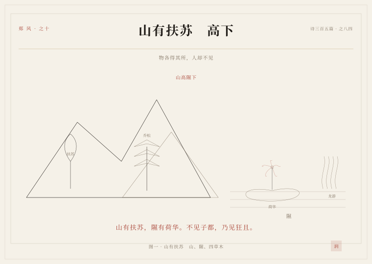
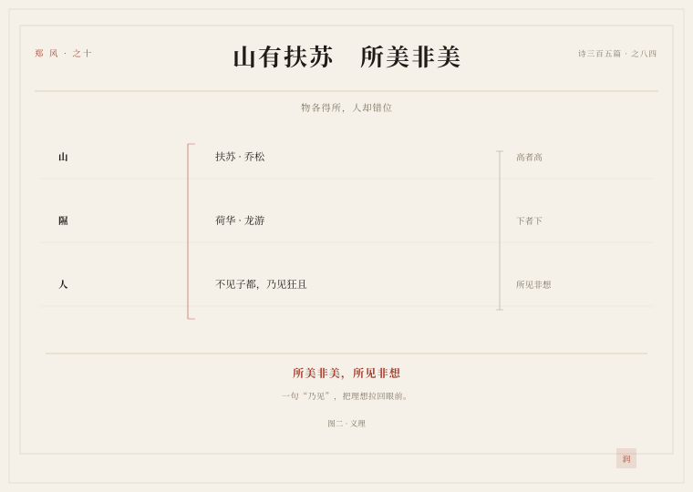

第八十四篇 山有扶苏
郑风 · 之十 SJ084
朗读 · 普通话
依经文原文朗读，章次不读出；配古琴底乐，不改速、不加拖腔。全库同一音色（豆包 TTS），非播音员录制。
一 解题
诗三判：
- 谁在说：一个女子在跟眼前的人调笑。她说：山上有扶苏，湿地有荷花；我想见子都，却见到你这个狂且。口气是嗔，不是怨；是“怎么又是你”，不是“怎么不是你”。
- 说什么事：两章，只换两对草木、两个美男名、两个坏称呼。山与隰各得其所，草木各生其地；人却“不见”所想的，“乃见”眼前的。
“乃见”两个字，把理想拉回眼前。
- 为何编在此：郑风之十。083 写“美而不娶”，084
写“美而不见”。一个把好女子挡在门外，一个把好男子挡在想象里；都是“所美非美”。
《毛序》：“《山有扶苏》，刺忽也。所美非美然。”
朱子《诗集传》：“赋也。扶苏，小木也。荷华，芙蕖也。子都，男子之美者也。狂，狂人也。且，语助辞。乔松，乔，高也。龙游，荭草也。子充，男子之美者也。狡童，狡狯之童也。○淫女戏其所私者曰：山则有扶苏矣，隰则有荷华矣，不见子都，乃见狂且。则其言也，可谓善谑矣。”
本库的看法：《山有扶苏》是一首把“理想”写成“眼前”的诗。
山有扶苏，隰有荷华；高者高，下者下，各得其所。人却不然：想见子都，见到狂且；想见子充，见到狡童。
这不是“遇人不淑”的悲，是“眼前人”的戏；“乃见”是意外，也是认命；认命里带着笑。
先辨四事：“扶苏”是小木，不是“扶苏太子”；“荷华”是荷花，不是“华”；“子都、子充”是美男子名，不是“都城的儿子”；“狂且、狡童”是戏称，不是两种罪。
二 经文
第一章
山有扶苏，隰有荷华。
不见子都，乃见狂且。
第二章
山有乔松，隰有龙游。
不见子充，乃见狡童。
分章：二章，章四句。
三 韵读
- 一章：苏、华、都、且，鱼部；四句一韵。
- 二章：松、游、充、童，东部；“游”幽部，顾氏以为通押。
读法：一章鱼部，开口；二章东部，收口。由“华”到“松”，由“都”到“充”；草木换高，人换名，戏不换。
四 字义与名物
- 扶苏：小木；一说“扶苏”为木名，枝叶扶疏。
- 隰：低湿之地。荷华：荷花。
- 子都：男子之美者；一说郑大夫公孙阏，字子都。
- 狂且：狂人；且，语助。狂是戏称，不是真疯。
- 乔松：高松。乔，高。
- 龙游：荭草；一说“龙葎”，草名。
- 子充：男子之美者；与子都对。
- 狡童：狡狯之童；戏称，不是“狡猾的儿童”。
五 今译
山上有扶苏，湿地有荷花。我想见子都，却见到你这个狂人。
山上有高松，湿地有荭草。我想见子充，却见到你这个狡童。
六 章旨
- 一章：山隰各有所生，人却“不见”“乃见”；物的秩序对，人的秩序不对。
- 二章：乔松更高，龙游更低；高低拉得更开，反差更大。
- 总收：所美非美，所见非想；一句“乃见”，把理想拉回眼前。
诗不怨，笑；笑里有一点认命。
七 诗教
- 兴：以山隰草木起兴。高下各得其所，是“物之正”；人不得其所想，是“人之反”。
- 观：观“所美”。你嘴里说子都，眼前却是狂且；说的和见的，不是一回事。
- 群：调笑是两个人的群。“乃见”不是骂，是亲近的人才会说的话。
- 怨：诗里无怨。毛序的“刺”在“所美非美”：把不美的当美，是君主的毛病，也是人的毛病。
八 分寸与边界
- 不可把“扶苏”当太子扶苏。它是小木；一读成人名，山隰就断了。
- 不可把“子都”当“都城的儿子”。它是美男子名；一读成地名，戏就没了。
- 不可把“狂且”当“疯子”。它是戏称；一读成病，调笑就成骂。
- 不可把“乃见”当“终于见到”。它是“却见到”；一读成终于，反差就没了。
- 不可把两章当两个人。两章是同一场戏的两次换名；一分为二，笑就散了。
九 存疑
- 诗旨：毛序“刺忽，所美非美”；朱子“淫女戏其所私”。一政治，一私情；本库两存，以“戏”读。
- 子都：朱子“男子之美者”；一说郑大夫公孙阏。从“美者”，才与“子充”成对。
- 龙游：毛传“龙游，荭草也”；一说“龙葎”。草名小异，不影响“隰”对“山”。
- “且”：语助；一说“且”为“粗”之借。从语助，口气才活。
- 作者与年代：毛序不言作者；朱子以为“淫女”。是否刺忽，无确证。
十 跨典
- 《孟子·告子上》：“不知子都之姣者，无目者也。”——子都之美，战国人犹称之；可作名物旁证。
- 《论语·学而》：“巧言令色，鲜矣仁。”——“所美非美”的另一面：美言美色，不等于仁。
- 《礼记·大学》：“好而知其恶，恶而知其美者，天下鲜矣。”——“不见子都，乃见狂且”，正是“好而不知其恶”的反面。
- 《诗本音》：二章韵读，苏、华、都、且鱼部，松、游、充、童东部，见卷三。
十一 双卡与图
双卡七对：
| 扶苏（小木） |
扶苏（太子扶苏） |
| 隰（低湿地） |
隰（山） |
| 荷华（荷花） |
荷华（华美） |
| 子都／子充（美男子名） |
子都／子充（都城之子） |
| 狂且（戏称） |
狂且（疯子） |
| 龙游（荭草） |
龙游（龙在游） |
| 乃见（却见） |
乃见（终于见） |

图一 · 山有扶苏 山、隰、四草木

图二 · 山有扶苏 所美非美
读图三处：
- 山隰分上下：图一上半山，下半湿地；扶苏、乔松在山上，荷华、龙游在水里。物各得其所，是诗的起点。
- 四草木不画人：图一不画子都，也不画狂且；人一画，戏就成肖像。
- “乃见”落在中间：图二左右两列，左“子都、子充”，右“狂且、狡童”，中间一个“乃见”的箭头；箭头一拐，理想落地。